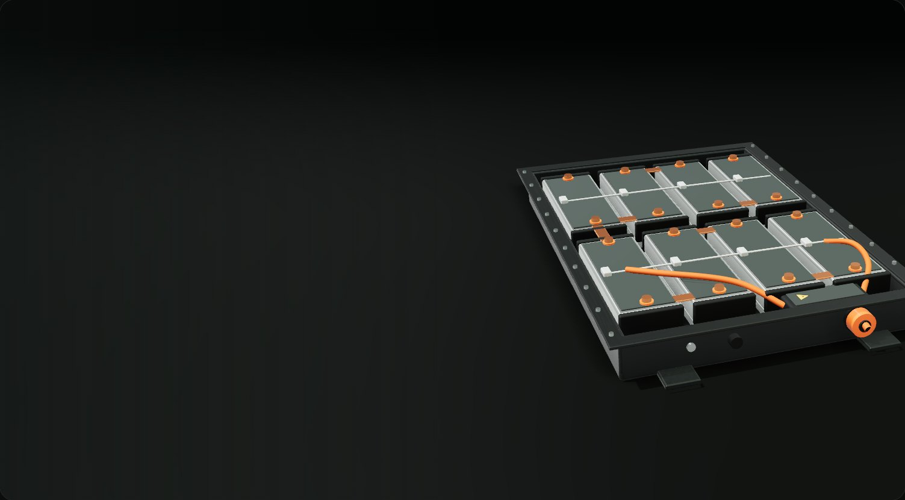
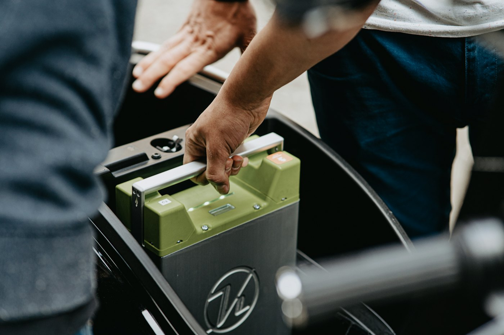
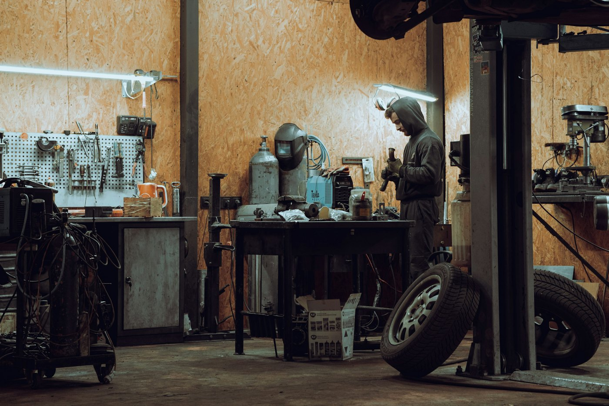
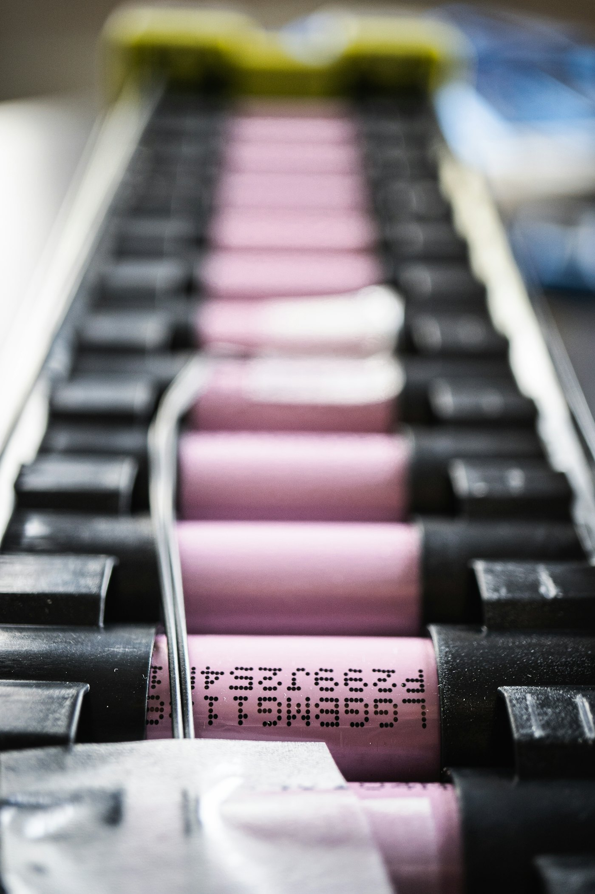

La estación de un vistazo
Una nave del tamaño de un taller mecánico, en un polígono o junto a un punto limpio, con acceso fácil en coche y furgoneta. Siete zonas unidas por un pasillo: la batería avanza siempre hacia la salida.

Estación SegundaVida es un punto de barrio donde se deja la batería gastada de un coche, una moto, una bici o un patinete. Se lee su pasaporte digital, se mide su estado de salud y se decide su destino: reutilizar, reparar o reciclar.
Pack de batería de tracción · modelo 3D ilustrativo
Propuesta académica de JOYFE Centro Profesional. La estación aún no existe.
Cada vez hay más vehículos eléctricos y sus baterías no duran para siempre. Dentro de unos años habrá una ola de baterías gastadas y hoy casi no hay sitios cercanos donde dejarlas ni donde aprovecharlas.
Cuando ya no dan autonomía suficiente para un coche, todavía pueden almacenar mucha energía. Reciclarlas directamente desperdicia esa vida útil.
Una batería de litio dañada puede calentarse e incendiarse. No puede ir a la basura ni a cualquier contenedor.
Litio, cobalto, níquel y cobre. Conviene mantenerlos en uso el mayor tiempo posible.
Desde el 18 de febrero de 2027, las baterías de coche eléctrico y de vehículo ligero de más de 2 kWh necesitan un pasaporte digital con código QR. Ver el reglamento.
Así recorre la estación una batería, desde que llega en furgoneta hasta que sale por uno de sus tres destinos. Baja para seguirla: cada parada explica qué se hace, quién lo hace y adónde va después.
Una nave del tamaño de un taller mecánico, en un polígono o junto a un punto limpio, con acceso fácil en coche y furgoneta. Siete zonas unidas por un pasillo: la batería avanza siempre hacia la salida.
La trae un particular, un taller o una empresa de reparto. Lo normal es pedir cita por la web.

Se identifica la batería y se abre su expediente.
Antes de moverla por la nave se comprueba que es seguro hacerlo.
Golpeada, hinchada o caliente Va a cuarentena.
Sin daños Pasa al laboratorio.
Las baterías dañadas se aíslan antes de tocarlas, hasta que es seguro manipularlas.
Se mide cuánta vida le queda.
El estado de salud se compara con unos umbrales que la estación fija y explica al cliente. El orden es siempre el mismo: primero reutilizar, después reparar y solo al final reciclar.
El documento del proyecto no fija los valores de los umbrales.
Si está sana, deja de mover un vehículo y pasa a guardar energía en un sitio fijo.
Si solo fallan algunas celdas o módulos, se cambian y la batería vuelve a un vehículo.

Si está dañada o casi sin capacidad, se prepara para una planta autorizada.

Todo lo que sale espera aquí, separado por destino.
El cliente sabe qué ha pasado con su batería.
La propia estación funciona con una batería de segunda vida.
Así se vería el contador que publicaría la web cuando la estación funcione: lo que se ha reutilizado y lo que se ha recuperado, acumulado.
Para el ciudadano el servicio es gratuito. Pide cita, cuéntanos qué batería tienes y si está dañada, y te decimos cómo traerla con seguridad.